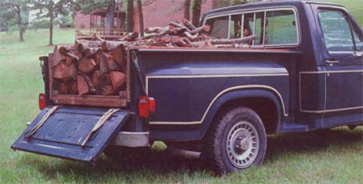

PHOTOS BY THE AUTHOR
ABOVE: The truck's tailgate/bumper combination must alloe the gate to drop below the level of the bed in order to operate. BELOW: The author/inventor's ""dump box"" in action. A light touch on the brakes activate the system and the box can be pushed.